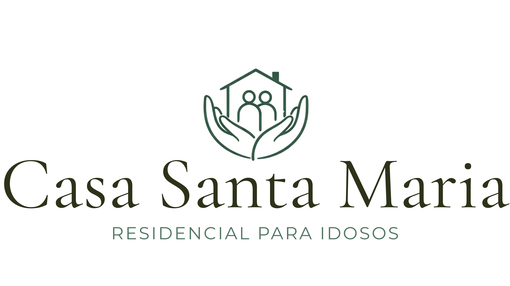
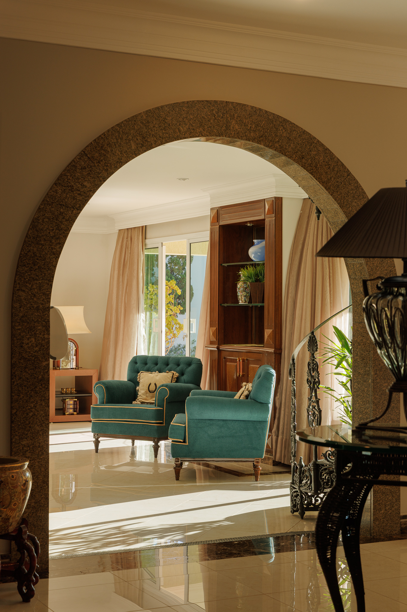
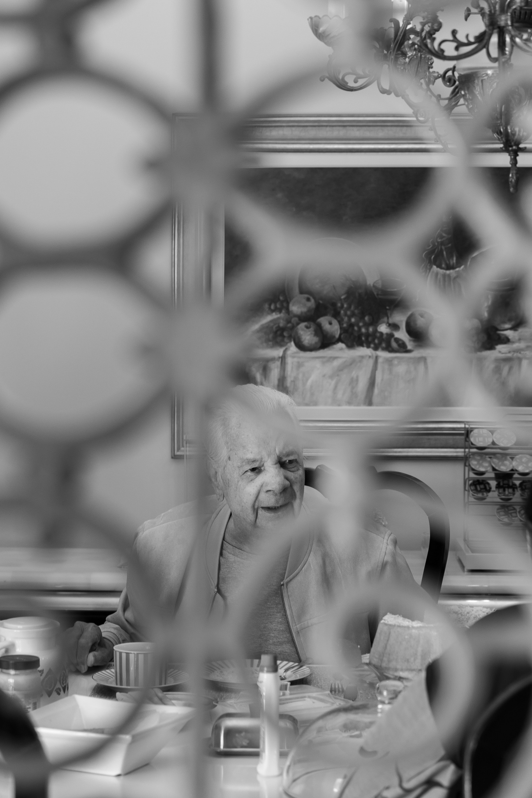
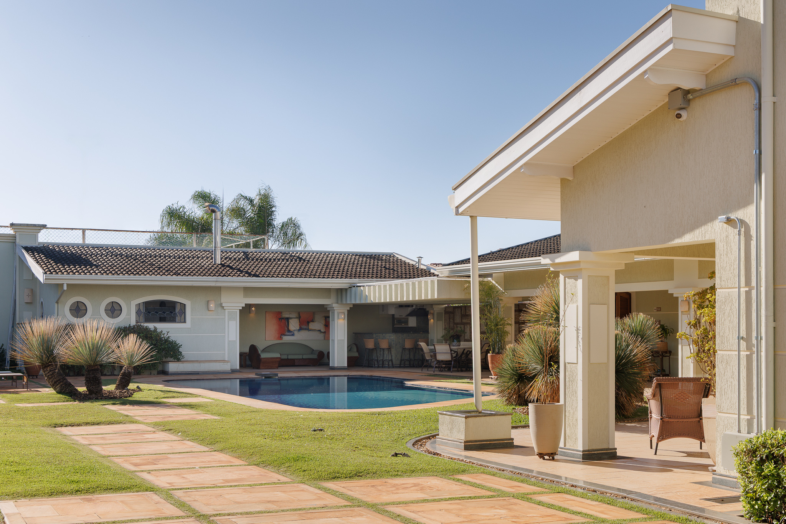
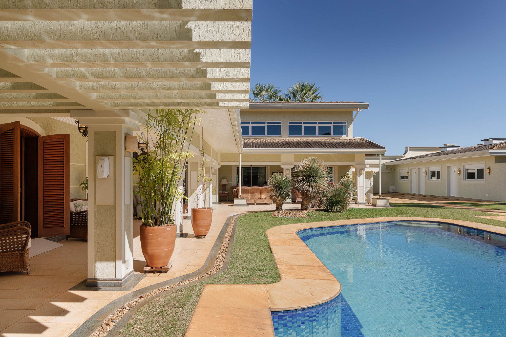
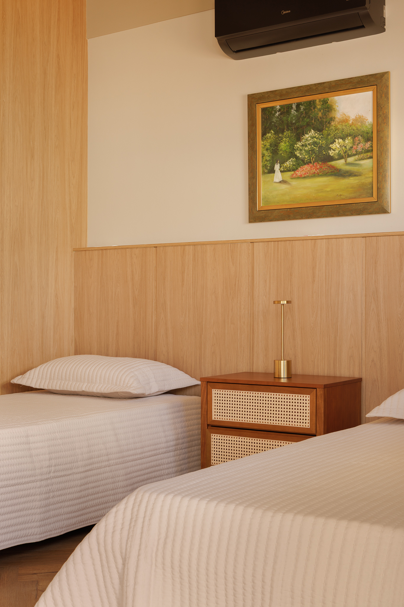
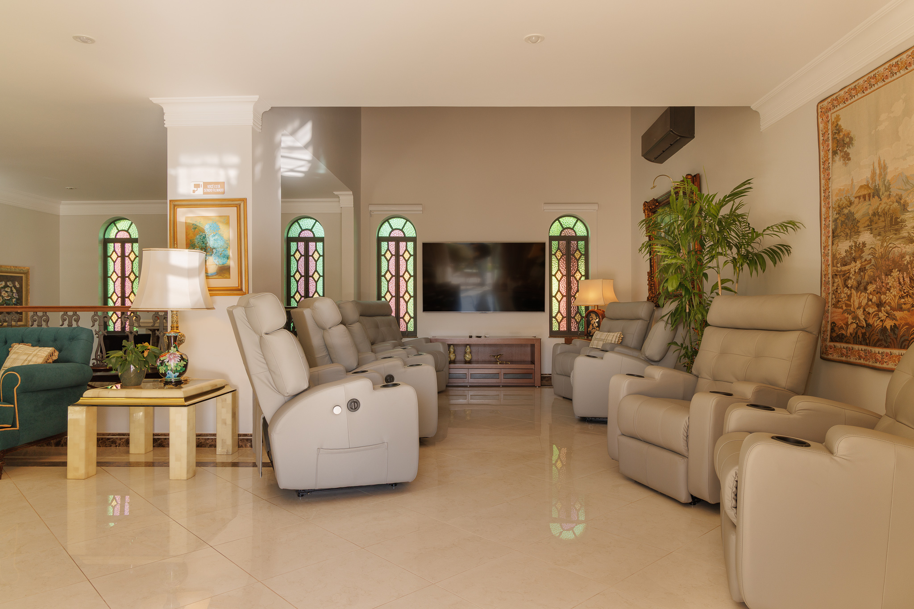
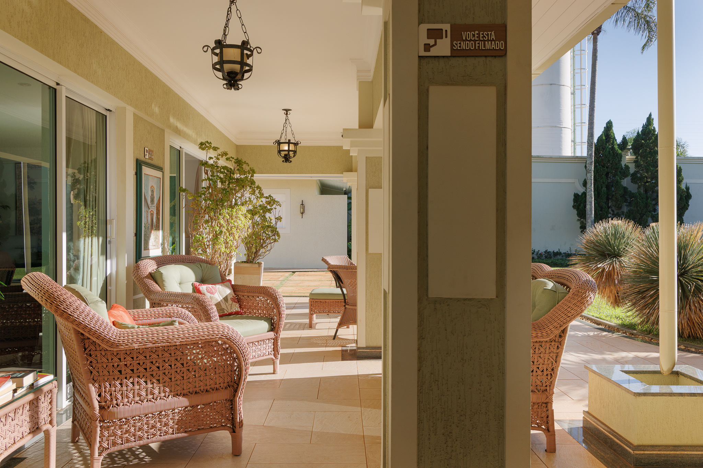
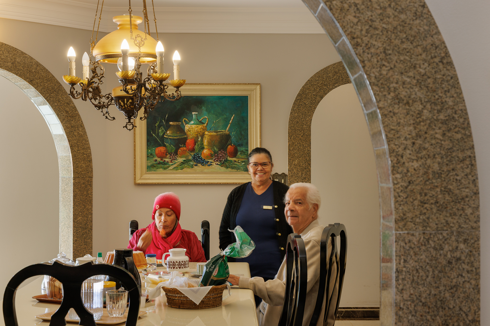
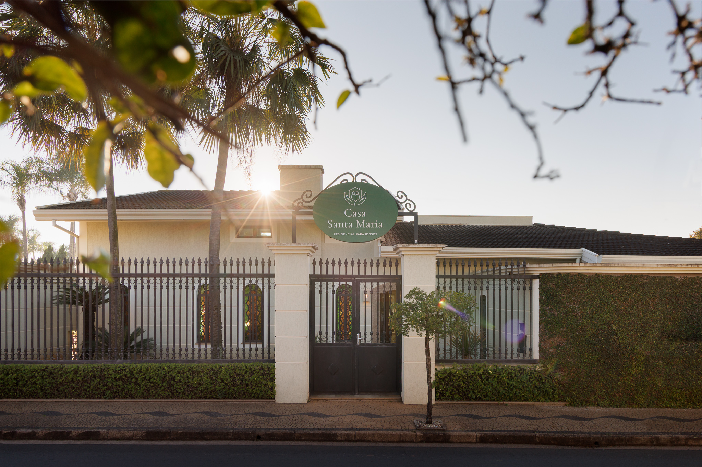

Falar no WhatsAppCuidado humanizado em um lar acolhedor, ativo e seguro, onde cada residente é acompanhado em sua própria história, no seu próprio ritmo.
Ela nasceu dentro de uma casa real, a casa de Maria Antonieta e Jaime. Grande, aberta e cercada de natureza, com jardim, piscina e espaços pensados para reunir gente. Por muitos anos, essa casa foi palco de almoços em família, amizades duradouras e uma rotina cheia de vida.
Até que o tempo trouxe outros desafios. Maria foi diagnosticada com Alzheimer, e das necessidades do cuidado diário, somadas à solidão que muitas vezes acompanha o envelhecimento, nasceu um novo propósito: devolver vida àquela casa.
Assim nasceu a Casa Santa Maria. Não para criar apenas uma instituição, mas para criar um lar, onde o envelhecimento é vivido com companhia, rotina ativa, dignidade e presença verdadeira, todos os dias.

Para que cada residente viva com saúde, autonomia e presença, todos os dias.

Suítes privativas e quartos compartilhados, com sistema de emergência disponível em todos os ambientes.
Cardápios variados, elaborados de acordo com as necessidades e preferências de cada residente. Refeições servidas em ambiente social, porque comer também é conviver.
Jardim, piscina e áreas de convívio. A mesma casa acolhedora de sempre, agora preparada para cuidar.






A Casa Santa Maria fica em uma área arborizada e tranquila, de fácil acesso para visitas frequentes da família.

Entre em contato para agendar uma visita e conhecer de perto a rotina da Casa Santa Maria.